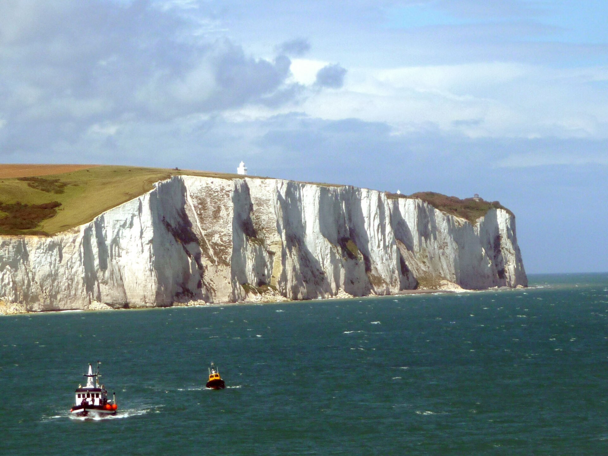

A UK anti-migrant activist admits slashing a migrant boat in the English Channel
Daniel Thomas, 37, pleaded guilty to criminal damage at Portsmouth Crown Court. In the 22 September incident the roughly 50 migrants had already been rescued; only a French coast-guard officer remained aboard. Sentencing is on Wednesday.

In the United Kingdom, an anti-migrant activist, Daniel Thomas, 37, known as Danny Tommo, has admitted slashing a migrant dinghy with a knife in the English Channel. According to ABC News and UPI, he pleaded guilty to criminal damage at Portsmouth Crown Court — he had previously pleaded not guilty.
The 22 September incident
The incident took place on 22 September 2026. Social-media video shows Thomas taking a knife to the boat. An important detail: the roughly 50 migrants who had been aboard had already been rescued and taken to Dover; only a French coast-guard officer remained on the dinghy when it was slashed.
Who the activist is
Thomas is the founder of the anti-immigration group Patriot Platform and a longtime associate of the far-right activist Stephen Yaxley-Lennon, better known as Tommy Robinson. His group had organised anti-migrant protests in Dover and Portsmouth in September 2026.

What he said and what happens next
In the video Thomas can be heard saying: 'This is what needs to happen to everyone in these boats. This is England. Get off the boat, you have time to get off the boat. This is not France.' Sentencing is on Wednesday, and he remains in custody. Thomas also pleaded not guilty to a charge of refusing to give police his phone passcode.